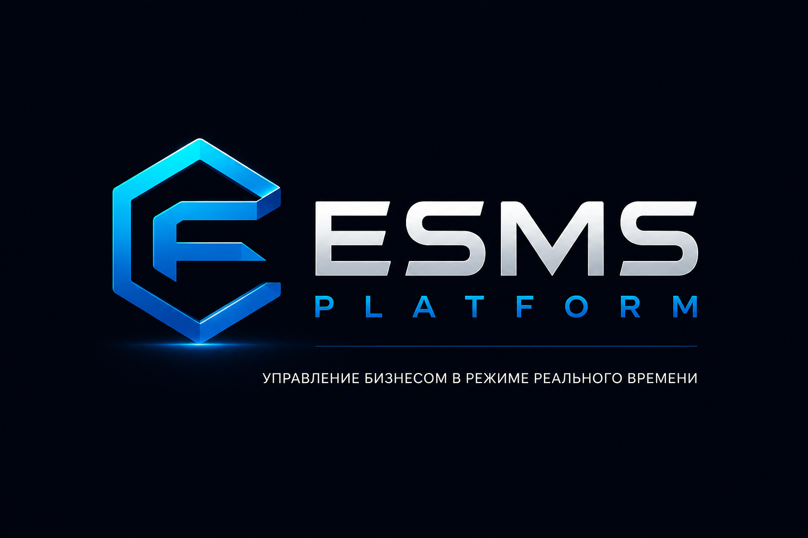

ESMS Core
Центральное управление заявками, персоналом, объектами, сроками, SLA и качеством.

ESMS не меняет ваш бизнес. Она меняет способ управления им. Объедините сотрудников, процессы, документы, аналитику и управленческие решения в единой цифровой платформе.
По мере роста бизнеса процессы усложняются, данные оказываются в разных системах, а руководителям становится сложнее принимать решения.
Таблицы, чаты и разные программы мешают видеть полную картину.
Сотрудники тратят время на подготовку отчетов вместо работы.
Важная информация поступает слишком поздно.
ESMS объединяет процессы компании в единую цифровую систему.
Прокручивайте этапы и смотрите, как ESMS превращает событие клиента в управляемый процесс, результат и обновлённые KPI.
Отклонений не обнаружено. Заявка укладывается в норматив SLA.
Каждое событие — от новой заявки до решения руководителя — становится частью единого цифрового процесса.
Центральное управление заявками, персоналом, объектами, сроками, SLA и качеством.
Оперативная картина компании, события, риски, KPI и управленческие решения.
Маршруты, карта объектов, сектора и пространственная аналитика.
Поиск отклонений, прогнозирование и рекомендации руководителю.
Показатели компании без ручной сборки таблиц и сводок.
ESMS соединяет операционную работу, контроль качества, аналитику и коммуникации.
Приоритеты, сроки, статусы и история.
Загрузка, маршруты и эффективность.
Измеримые показатели по ролям.
Контроль сроков и предупреждения.
Тренды, сравнения и прогнозы.
Автоматическая управленческая отчётность.
Объекты, сектора и геоаналитика.
Рекомендации и раннее выявление рисков.
Выберите роль и посмотрите, как меняется рабочее пространство внутри одной системы.
Переключайте вкладки и смотрите KPI, заявки, карту, сотрудников и интеллектуальные рекомендации ESMS.
AI анализирует события, находит отклонения и предлагает конкретные действия.
Обрабатываются события компании…
Все модули могут работать самостоятельно, но максимальную ценность дают вместе.
Посмотрите ESMS на сценариях вашей компании и оцените, как может выглядеть единая цифровая модель управления.